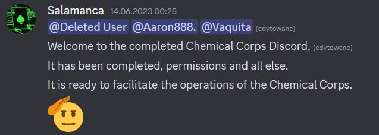

The First Head Researcher Salamanca
Salamanca didnt do much, I quote President Richardson "Salamanca didnt do shit".

EXPERIENCED RESEARCHER CR0SSBEAN
We dont know much about him, all we know is that he made the FEV experiment. He was on duty while the Salamanca times were ongoing.
Doctor Glith
Im sure that you are not here to read about me. All im going to say is that I am an ex Head Researcher. If you want to hear more about me, check the LOGS.

Assistant Head Researcher BenefactorsBlade
One of the greatest Co-workers. He was my Assistant. He really knew what to say. To be honest, I miss him and the old times. He left E.C.C. on 02.08.2024.